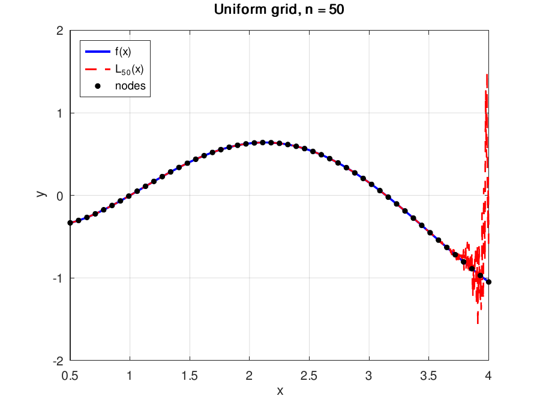
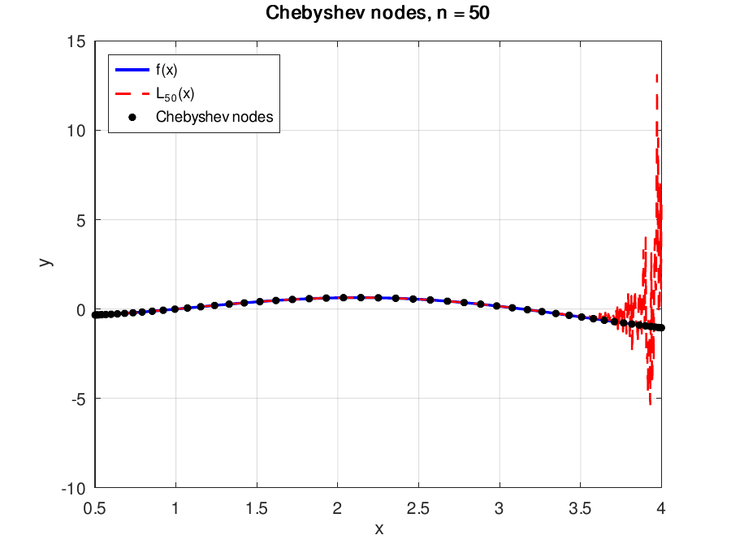
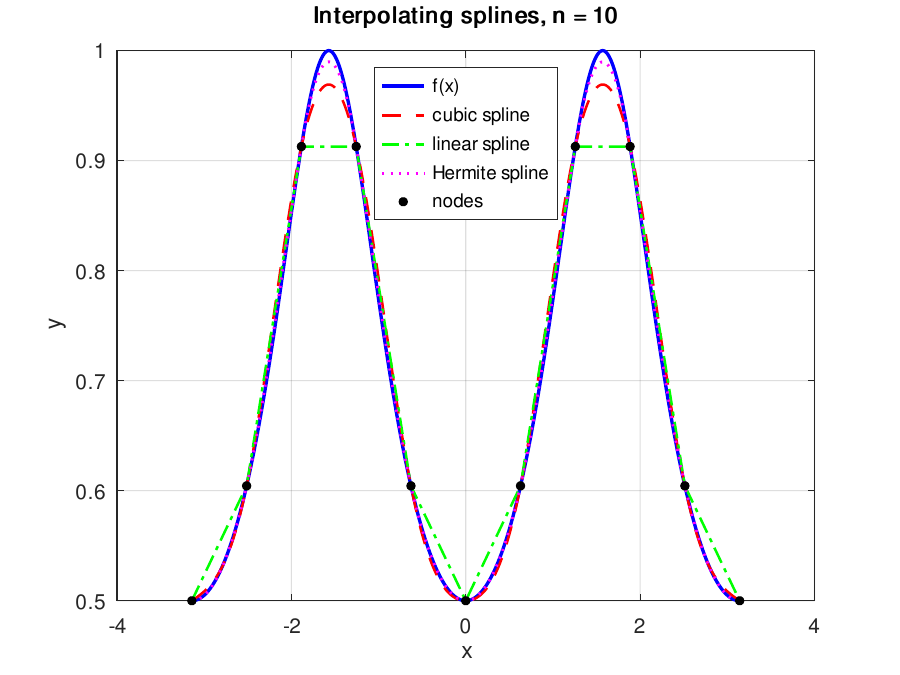
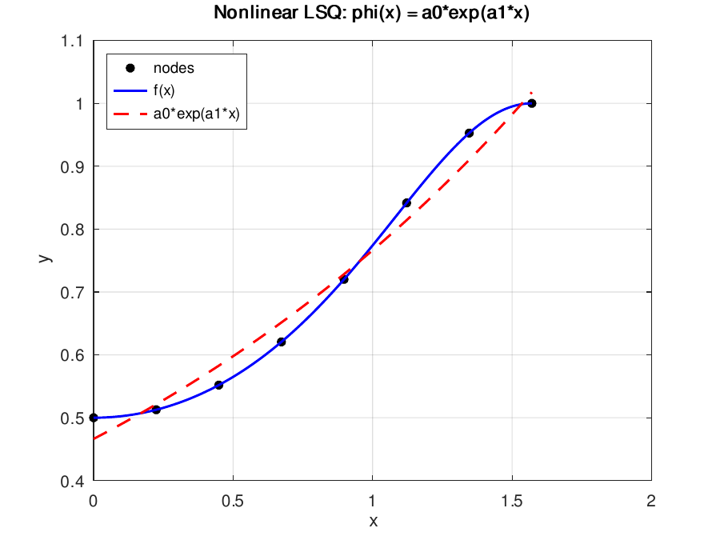

Coursework · Numerical methods
Interpolation, quadrature and ODEs in Octave
Eight labs, each method written from its definition rather than called from a library: Vandermonde solves, three kinds of spline, mean-square and least-squares approximation, adaptive Simpson, and two ODE integrators. Every lab has a written report.
- 63function evaluations for eps = 1e-6 on integral A
- 4.0e43condition number, uniform Vandermonde at n = 50
- 4.9e-7Heun vs ode45 at x = 1
Interpolation
At n = 50, Chebyshev nodes give a worse interpolant than uniform nodes: maximum error 14.1 against 2.5, with a Vandermonde condition number of 1.5e44 against 4.0e43. That result is the opposite of what the assignment was set up to show.
The first lab interpolates f(x) = ln(x)·sin(x) on [0.5, 4] by solving a Vandermonde system for the polynomial coefficients, A = vander(x); c = A \ y, at degrees 3, 5, 10 and 50, once on a uniform grid and once on Chebyshev nodes x_j = (a+b)/2 + (b−a)/2 · cos((2j+1)π / 2(n+1)). The exercise targets the Runge phenomenon: uniform nodes should oscillate wildly near the interval ends as the degree grows, and Chebyshev nodes, clustered towards the ends, should remove those oscillations.
At n = 3, 5 and 10 both grids track the function closely. This f is tame enough that ten uniform nodes already give a visually exact fit, and at n = 10 the maximum errors are 1.8e-5 uniform and 9.9e-5 Chebyshev, which is ordinary behaviour. At n = 50 the uniform-grid polynomial does break down, into high-frequency jitter over the last half-unit of the interval. The Chebyshev version breaks down in the same place and considerably worse, swinging to ±13 where the function stays inside [−1.1, 0.7].
| n | Uniform | Chebyshev |
|---|---|---|
| 3 | 5.19e+02 | 5.76e+02 |
| 5 | 1.14e+05 | 8.38e+04 |
| 10 | 1.47e+11 | 2.86e+10 |
| 50 | 4.00e+43 | 1.52e+44 |
At n = 50 the matrix is numerically singular in double precision. The plots show rounding error in the coefficients, amplified by the monomial basis, rather than the Runge phenomenon.
Chebyshev nodes control the ω(x) = ∏(x − x_i) factor in the interpolation error term, which is a statement about the mathematical polynomial. They say nothing about the conditioning of the linear system solved to find that polynomial's coefficients in the basis 1, x, x², …, and that conditioning grows exponentially with degree regardless of node placement. Fixing it means changing basis, to barycentric Lagrange or an orthogonal-polynomial representation, rather than moving the nodes. Octave itself flags the n = 10 and n = 50 solves as rank-deficient.


The lab also compares the theoretical remainder bound |R₃(x)| ≤ M₄/4! · |ω(x)| against the error measured at the midpoints of a degree-3 fit. With M₄ = max|f⁗| = 14.29 the bound comes out around 1.03 where the real error is 0.14, pessimistic by roughly eight times. The bound takes the worst fourth derivative anywhere on the interval and applies it everywhere.
Splines
The second lab keeps the pieces low-degree and adds more of them. Three interpolants are built by hand on f(x) = 1/(1 + cos²x) over [−π, π]: a global cubic spline with natural end conditions, assembled as a tridiagonal system in the second-derivative moments and solved directly; a linear Lagrange spline; and a cubic Hermite spline that additionally consumes the analytic derivative at each node.
| n | Cubic | Linear | Hermite |
|---|---|---|---|
| 3 | 1.87e-01 | 1.80e-01 | 3.49e-02 |
| 5 | 9.85e-02 | 9.35e-02 | 1.54e-02 |
| 10 | 1.28e-02 | 3.14e-02 | 3.35e-03 |
| 50 | 5.61e-05 | 1.23e-03 | 4.54e-06 |
Nothing here diverges. Refining the grid improves every method monotonically, which is the whole argument for splines over one high-degree polynomial. The Hermite spline wins throughout by about an order of magnitude, as it should, since it is given twice as much information: the value and the slope at every node. At n = 3 and 5 the cubic spline is marginally worse than the linear one, because with so few knots the natural end conditions impose zero curvature at ±π, where this function has none, and that costs more than the higher degree gains. By n = 10 the ordering is the expected one.

f.Approximation
The next two labs drop the requirement of passing through the data. Lab 3 computes best mean-square approximations three ways. Polynomials on [0, 1] via the normal equations, whose Gram matrix has entries 1/(i+j−1) and is the Hilbert matrix, so the interpolation lab's conditioning problem reappears in a different form. A truncated Chebyshev series on [−1, 1], its coefficients obtained by numerically integrating f(x)·T_k(x)/√(1−x²). And an L²-projection onto linear splines, assembling the spline mass matrix and integrating the hat functions against f segment by segment.
Lab 4 is ordinary least squares over eight sample points on [0, π/2], with polynomials of degree 2, 3 and 6 and with the nonlinear model φ(x) = a₀·exp(a₁x). The nonlinear fit is handled by linearization: take logs, so ln y = ln a₀ + a₁x becomes a two-column linear system. That is the cheap standard trick and also a compromise, since it minimizes squared residuals in log space rather than in y. The fit is visibly imperfect for a second and larger reason. An exponential is monotone and convex, while the target function is S-shaped with an inflection, so no a₀, a₁ can follow it.

Quadrature and ODEs
Lab 5 integrates atan(2x)/(x²+5) on [0, 2] and eˣ/(x³+3) on [0, 1] with a pair of nested composite Simpson rules. The five-node rule's abscissae are a subset of the nine-node rule's, so one batch of nine function values yields both estimates, and their difference gives a Runge error estimate |S₉ − S₅|/15, the 15 being 2⁴ − 1 for a fourth-order method. When the local estimate exceeds the tolerance apportioned to the current subinterval, the interval is halved and the right half pushed on a stack. Otherwise its contribution is accepted. Function evaluations are counted, since that is the only cost that matters when f is expensive.
| Integral | eps | Evaluations | Actual error |
|---|---|---|---|
| A | 1e-3 | 9 | 1.13e-04 |
| A | 1e-6 | 63 | 4.89e-07 |
| B | 1e-3 | 9 | 7.79e-07 |
| B | 1e-6 | 9 | 7.79e-07 |
Integral B costs 9 evaluations at both tolerances. One pass of the nine-node rule already lands within 8e-7, so tightening the tolerance by three orders of magnitude triggers no subdivision at all. Integral A runs over a longer interval with more curvature near zero and spends 63 evaluations, about seven subintervals' worth of work, for the same target.
Labs 6 and 7 solve the same initial value problem, y' = x²·cos(0.5y) + 1, y(0) = 1 on [0, 1]. Lab 6 uses Heun's method, explicit Runge–Kutta of order 2, and picks the step automatically: integrate on n intervals, again on 2n, compare at the shared nodes and take max|y_2n − y_n|/3 as the Runge estimate, the divisor being 2² − 1 for a second-order method, doubling until it falls below 1e-6. It settles at n = 256, estimated error 8.7e-7 against an actual discrepancy from ode45 of 4.9e-7, so the estimator is accurate to within a factor of two.
Lab 7 replaces the one-step method with two-step Adams schemes, both started from a single Heun step. The explicit AB2 formula and the implicit AM2 formula, the latter run as a predictor–corrector pair in which AB2 predicts y_p and AM2 corrects using f(x_i, y_p), are compared against ode45 at n = 4, 8 and 16:
| n | AB2 (explicit) | AM2 (predictor–corrector) |
|---|---|---|
| 4 | 5.71e-03 | 1.26e-04 |
| 8 | 1.41e-03 | 4.62e-05 |
| 16 | 3.43e-04 | 7.32e-06 |
AB2's error falls by a factor of about 4.05 each time the step is halved, which is the second-order convergence the theory predicts, measured rather than asserted. The corrector step buys roughly fifty times the accuracy at four evaluations per step instead of two, which is cheap on this problem.
The final assignment is a nine-task summary paper covering the whole course on small hand-checkable problems: Lagrange and Newton divided-difference interpolation with the remainder bound, a Hermite polynomial fitted through prescribed values and derivatives, finite-difference tables, difference formulas for the derivative checked against exact values, a three-node cubic spline, mean-square and least-squares fits, and Runge estimates for three quadrature rules on tabulated data.
This is coursework for a numerical methods course: variant-numbered problems, Octave scripts, LaTeX reports. Every method is implemented from its definition. The only library routines used are quad/quadgk and ode45, and those only to produce reference values for checking the hand-written code.